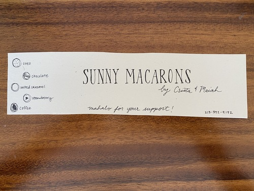
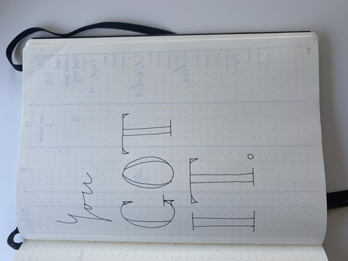
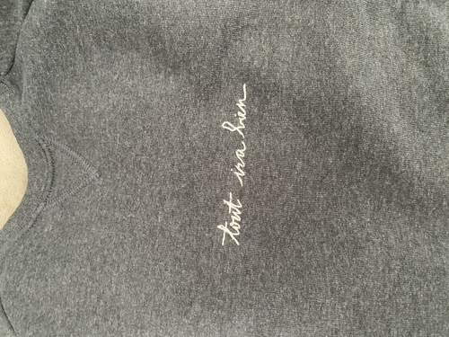
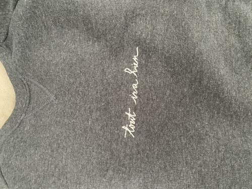

John Doe
My name is Crista Soriano. I am a 2nd year English major at University of California, Riverside. I attended and graduated from Da Vinci science high school class of 2023. I am originally from Los Angeles and have lived near the beach my whole life. I participated in many excellent leadership roles in both high school and college. I spent most of my extracurricular time in community service events such as cleaning the beach. I later went on to being president of Interact Club- an international high school service club dedicated to service above self. I was also the head of communication for my high school senior committee. My greatest high school experience was teaching a calligraphy seminar twice a week for all of my senior year. I spent most of my extracurricular time in community service events such as cleaning the beach. I later went on to being president of Interact Club- an international high school service club dedicated to service above self. I was also the head of communication for my high school senior committee. My most valuable teaching experience was in my senior year at Da Vinci Science High School as one of the school’s first student-instructors. As a calligraphy instructor, I co-taught a classroom of 25 students for 50-minute periods twice a week while managing my own academics. This fulfilling position allowed me to experience planning lessons, interacting with students, maintaining enthusiasm for a long period, and remaining organized.
I continued the same passion for leadership and service in my college career. In my freshman year at University of California at Riverside, I took up 2 leadership positions. I was the Chair of Publicity for the Residence Hall Association which commonly goes by RHA. Alongside being Chair of Publicity, I joined an Operations Committee for another club. Both roles allowed me to exercise my leadership skills and grow stronger in my communication with others. I am grateful for both experiences for pushing me to expand my knowledge in leadership. Both roles allowed me to exercise my leadership skills and grow stronger in my communication with others. I am grateful for both experiences for pushing me to expand my knowledge in leadership.
With an English major, I intend to become a middle school or high school teacher after receiving my teaching credentials. I will then work for a Masters degree. I am currently apart of the Freshman Mentor Collective. The Freshman Mentor Collective is a mentorship program which allows me to assist current freshmen at University of California in Riverside and provide them with any assistance they may need. I am able to relay my personal experiences to the freshman who seek guidance. I will then work for a Masters degree. I am currently apart of the Freshman Mentor Collective. The Freshman Mentor Collective is a mentorship program which allows me to assist current freshmen at University of California in Riverside and provide them with any assistance they may need. I am able to relay my personal experiences to the freshman who seek guidance.
Experience
Chair of Publicity
• Created posters and advertisements for RHA
• Communicated with E-Board
• Experience with Canva
Calligraphy Instructor
• taught students calligraphy
• Created posters
• Created lesson plans
Education
UC Riverside
Portfolio




